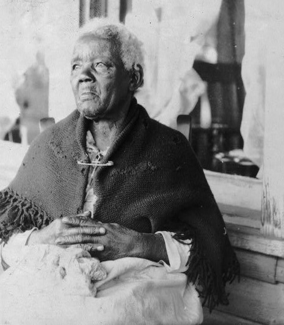

On March 26, 2002, the first of a series of cases was filed by descendants of enslaved Africans against corporations complicit in antebelum slavery. It was entitled:Farmer-Paellmann v. FleetBoston. Claims included human rights and consumer fraud allegations. It was dismissed with prejudice in United States District Court on July 6, 2005, but reversed on appeal by the United States Court of Appeals, Seventh Circuit, on December 13, 2006.
Consumer Fraud arguments were permitted to move forward as the Court held that:
"plaintiffs are charging the defendants with misrepresenting their activities in relation to slavery. A seller who learns that some class of buyers would not buy his product if they knew it contained some component that he would normally have no duty to disclose, but fearing to lose those buyers falsely represents that the product does not contain the component, is guilty of fraud."
The Consumer Fraud claims made in the case were recognized as viable alternatives to human rights arguments in:
The RSG worked with slave descendants to file genocide compensation lawsuits. The cases were based on the UN Genocide Convention codified in the United States as the Proxmire Act and using African Ancestry DNA test results and TransAtlantic Slave Trade Database research. The case was subsequently withdrawn for future filing.
Photo by Library of Congress.
Sarah Gudger, 121-years-old, was formerly enslaved in Ashville, North Carolina.